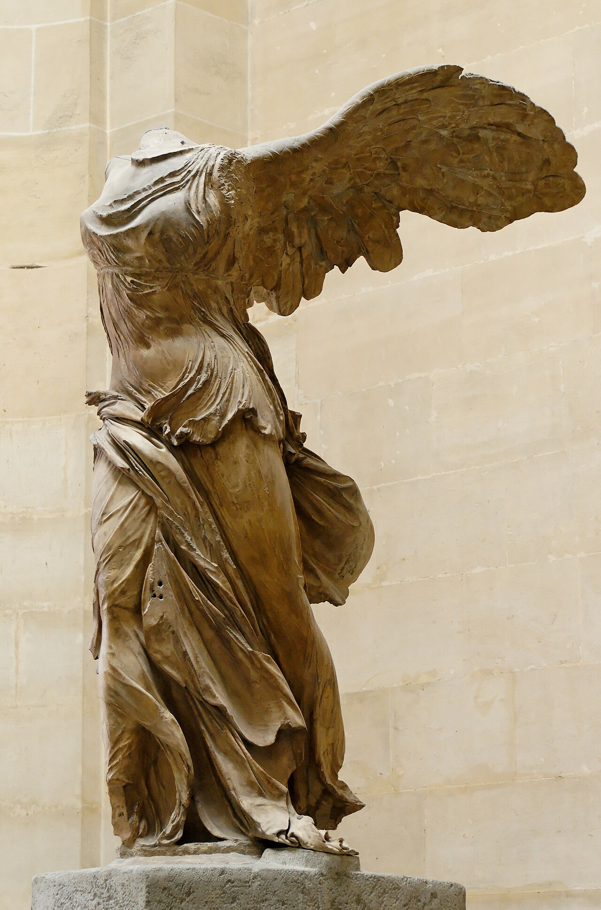

В ролике кажется, что Джарвис устанавливается одной кнопкой. В реальности это несколько знакомых инструментов, собранных вокруг Claude Code. Самый рабочий подход: одно подключение, один тест, одна проверка. Потом следующий слой.
00 · Модель системы
Что ты на самом деле строишь
Claude Code работает в терминале или в веб-версии. Он читает файлы, запускает команды, пишет код и подключается к другим приложениям. Прямой доступ к сервисам обычно дают MCP-коннекторы. Каждый коннектор связывает Claude с одной системой: Gmail, RevenueCat, Metricool или другим источником.
- МозгClaude Code принимает запрос, собирает контекст и решает, какие инструменты вызвать.
- ПодключенияMCP-коннекторы дают доступ к почте, аналитике, публикациям и другим сервисам.
- ИнтерфейсДашборд показывает цифры, приоритеты, статусы подключений и голосовой бриф.
- ПравилаНавыки и специалисты объясняют, как выполнять повторяемую работу и где остановиться.
Не подключай всё сразу. Добавь один сервис, проверь чтение реальных данных и только потом разрешай действия.
01 · Перед стартом
Подготовь Claude Code и аккаунты
Понадобится платный план Claude, установленный Claude Code и аккаунты в тех сервисах, которые ты собираешься подключать. Голос, Chrome, Design, специалисты и облачные расписания расходуют общий лимит плана.
npm install -g @anthropic-ai/claude-code
claudeКак подключать MCP
Для HTTP-коннектора используй команду ниже. После добавления открой /mcp, закончи OAuth-вход и проверь соединение. Если планируешь облачные routines, добавь тот же коннектор в веб-версии Claude.
claude mcp add --transport http NAME https://адрес-коннектора/mcp
/mcpПопроси показать данные и прямо запрети изменения. Успешная авторизация ещё не доказывает, что коннектор возвращает правильный аккаунт и правильные данные.
02 · Лицо Джарвиса
Собери дашборд
Есть два нормальных пути. Первый: приложить референс и попросить Claude Code собрать автономную HTML-страницу. Второй: сначала сделать макет через Claude Design, а затем отправить его в Claude Code.
- По изображению. Добавь скриншот как
@mockup.png. После первой версии попроси сделать скриншот результата, сравнить его с референсом, перечислить отличия и повторять исправления до близкого совпадения. - Через Claude Design. Создай интерфейс в claude.ai/design или через
/design, затем продолжи работу в Claude Code.
Плотный интерфейс редко получается идеально за один проход. Автоматический цикл работает только тогда, когда агент умеет сам открыть страницу и сделать скриншот. Иначе сравнивать придётся тебе.
Промпт для кинематографичного центра управления
Собери автономный dashboard.html в стиле командного центра «Джарвис».
Фон почти чёрный, с холодным синим оттенком. В центре находится светящаяся голубая сфера из сотен точек на Canvas. Она медленно вращается, мягко пульсирует в режиме ожидания и реагирует сильнее во время голосового ответа.
Добавь вокруг сферы орбиту, HUD-дуги, радиальные лучи и деления. Поверх интерфейса размести:
• название «Джарвис», дату и живые часы;
• статусы подключений;
• поток последних действий;
• панель показателей и полосы прогресса;
• главные цифры и приоритеты дня;
• кнопку BRIEF ME и бегущую строку.
Данные читай из отдельного jarvis_data.js через window.JARVIS_DATA. Добавь скрытый аудиоплеер jarvis_brief.mp3. Во время воспроизведения сфера должна переходить в режим speaking.
Используй обычные HTML, CSS и JavaScript без библиотек. Поддержи Retina-экраны, reduced motion и мобильную версию. После сборки открой страницу, сделай скриншот, найди визуальные проблемы и исправь их.Повседневные цифры храни в jarvis_data.js. Тогда дизайн не придётся переписывать каждый день. Аудиобриф лежит рядом как jarvis_brief.mp3.
03 · Голос
Научи его слушать и отвечать
Здесь две независимые части: голосовой ввод и озвучивание ответа.
Говорить с Claude
В Claude Code включи голос через /voice. Удерживай пробел, говори и отпускай для отправки. Режим /voice tap переключает запись нажатием. Голос превращается в обычный текстовый запрос.
Получать голосовой ответ
Для голоса в стиле британского дворецкого подойдёт Fish Audio. Можно выбрать библиотечный голос или клонировать собственный голос из чистой записи. Не клонируй знаменитостей для публикации: это создаёт проблемы с правами на образ и голос.
Надёжный вариант: небольшой скрипт отправляет текст ответа в https://api.fish.audio/v1/tts, получает MP3 и воспроизводит его. Так проще выбрать модель, голос и эмоциональные теги, чем полагаться на сторонний MCP с устаревшими настройками.
Собери небольшой локальный Python-сервер для моего дашборда.
Он должен:
1. раздавать dashboard.html через localhost;
2. принимать текст в POST /ask;
3. отправлять запрос в Claude Code через claude -p;
4. возвращать текст ответа;
5. превращать ответ в речь через Fish Audio API;
6. отдавать MP3 браузеру;
7. добавить в дашборд кнопку микрофона, распознавание речи и воспроизведение ответа;
8. переключать визуальную сферу в режим speaking во время аудио.
Ключи бери только из переменных окружения. Добавь понятную инструкцию запуска и обработку ошибок.Открывай дашборд через localhost, а не как локальный файл. Браузерные разрешения на микрофон и сетевые запросы так работают предсказуемее.
Hermes Agent уже умеет голосовой режим и работает как отдельный open-source агент. Это самостоятельная архитектура, а не обязательное дополнение к Claude Code и Fish Audio.

04 · Действия в интернете
Дай ему браузер
Расширение Claude для Chrome добавляет боковую панель и позволяет агенту читать страницы, нажимать кнопки, заполнять формы и вытаскивать данные из дашбордов. Доступ выдаётся отдельно для каждого сайта.
Оставь подтверждение каждого действия. Постоянное разрешение имеет смысл только на полностью доверенном сервисе с ограниченными последствиями.
Страница может содержать вредоносную инструкцию для агента. Не давай свободный доступ к банку, менеджеру паролей и незнакомым сайтам.
05 · Метрики и публикации
Подключи деньги, контент и рекламу
RevenueCat
Если приложение или подписка работают через RevenueCat, подключи официальный MCP и начни с ключа только для чтения.
claude mcp add --transport http revenuecat https://mcp.revenuecat.ai/mcpПервый запрос: «Покажи активные подписки и выручку за этот месяц в сравнении с прошлым. Ничего не меняй».
Автопостинг
| Инструмент | Когда выбирать | Ограничение |
|---|---|---|
| Metricool MCP | Нужны публикации, аналитика и рекомендации по времени | Сначала проверь на черновике или тестовом канале |
| Buffer MCP | Нужна простая очередь публикаций | Каналы обрабатываются отдельно, аналитики меньше |
| Postiz | Нужен open-source и самостоятельный хостинг | Больше обслуживания |
Meta Ads
Рекламный коннектор Meta может читать показатели кампаний и менять бюджеты после подтверждения. Точный адрес официального MCP проверь в Meta Business Help перед подключением. Начинай только с чтения: «Покажи активные группы объявлений за 7 дней, отсортируй по CPM и ничего не меняй».
Сначала режим чтения. Затем лимиты бюджета внутри Meta. Только после нескольких проверок можно разрешать изменения с отдельным подтверждением.
06 · Входящие и поддержка
Разбирай почту и готовь ответы
Gmail
Официальный Gmail-коннектор умеет искать и читать письма, ставить метки и создавать черновики. Отправку оставь себе.
Прочитай непрочитанные письма за последние два дня.
Раздели их на три группы: нужен ответ, к сведению, можно проигнорировать.
Для первой группы подготовь короткие черновики в моём стиле.
Не отправляй письма и не меняй настройки почты.Ответы клиентам в твоём стиле
Создай навык поддержки и отдельную базу знаний. В папке навыка держи SKILL.md, faqs.md, правила возврата и шаблон ответа. Большие справочники должны загружаться только при вопросах поддержки.
Перед ответом прочитай faqs.md и refund-policy.md.
Если ответ подтверждён базой знаний, подготовь черновик в моём стиле.
Если информации нет или правила противоречат друг другу, передай вопрос мне.
Не придумывай политику и всегда помечай результат как ЧЕРНОВИК.«Автоматизировать 90% поддержки» здесь означает подготовить черновики. Автономную отправку не включай, пока система много раз не отработала без ошибок.
07 · Специалисты
Собери маленькую команду
Специалист работает в отдельном контексте со своим набором инструментов и подключений. Главный диалог остаётся чистым, а задача уходит агенту с подходящей ролью.
Файлы специалистов лежат в ~/.claude/agents/. Начни с одного или двух. Десять агентов на старте только усложнят маршрутизацию.
---
name: tom
description: Разработчик для ревью PR и реализации уже согласованных изменений.
tools: Read, Edit, Write, Bash, Grep, Glob
model: opus
mcpServers:
- github
---
Ты старший разработчик. Работай только по согласованному направлению.
Изучи изменение, реализуй его, запусти тесты и верни краткий отчёт с рисками.description отвечает за маршрутизацию, tools ограничивает инструменты, model задаёт модель, а mcpServers выдаёт коннектор только этому специалисту.
08 · Автоматический запуск
Запускай бриф по расписанию
Claude Code routines выполняются в облаке, даже когда ноутбук закрыт. Расписание можно создать командой или в веб-интерфейсе.
/schedule daily brief at 9amОна запускается автономно и может писать через подключённые сервисы. Оставь только необходимые коннекторы, запрети отправку, публикацию и удаление, а промпт сделай полностью самодостаточным.
Пусть routine складывает результат в конкретную страницу Notion или другой проверяемый источник. Зелёный статус означает только запуск. Первую неделю читай каждый результат.
Если нужны локальные файлы iCloud, используй расписание на компьютере. В этом случае Mac должен быть включён.
09 · Последовательность
В каком порядке это собирать
- Установи Claude Code и подключи один источник только для чтения.
- Включи встроенный голос. Отдельный TTS добавляй после проверки.
- Собери базу знаний и навык поддержки без доступа к Gmail.
- Подключи Gmail и оставь только черновики.
- Подключи аналитику и рекламу в режиме чтения.
- Выбери один инструмент публикации и проверь на тестовом канале.
- Добавь одного специалиста с минимальными правами.
- Создай routine только после того, как ручной сценарий стал стабильным.
Главное ограничение
Оставь человека в контуре
Три зоны дают реальные последствия: браузер действует в авторизованных аккаунтах, реклама тратит деньги, а почта говорит от твоего имени.
- Браузер показывает подготовленное действие до клика.
- Реклама работает в пределах лимитов, заданных в Meta.
- Письма и ответы клиентам остаются черновиками.
- Джарвис предлагает. Ты утверждаешь.
Ссылки
Что понадобится
- Claude и документация Claude Code
- Fish Audio для отдельного голоса
- RevenueCat MCP
- Metricool MCP, Buffer MCP и Postiz
- Hermes Agent как отдельный open-source вариант
Продолжение
Джарвис предлагает. Ты утверждаешь.
Больше практики про AI-агентов, автоматизацию и создание продуктов без магического мышления в Telegram.
Перейти в канал →